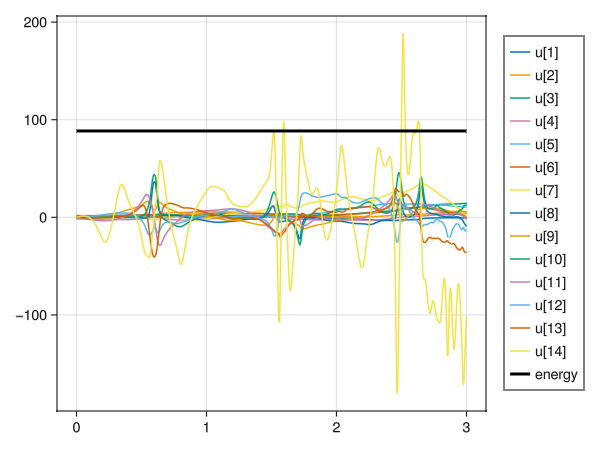

Plotting with Makie
In this tutorial, we will demonstrate how to plot the robot using GLMakie. Some familiarity with the Makie plotting ecosystem is required.
The code supporting plotting with Makie is defined in the extension "./ext/VMRobotControlMakieExt.jl", and where you should look if you are trying anything complicated!
Here is a simple example of plotting a mechanism loaded from a URDF.
using DifferentialEquations
using GLMakie
using VMRobotControl
using StaticArrays
using FileIO
using UUIDs
try FileIO.add_format(format"DAE", (), ".dae", [:DigitalAssetExchangeFormatIO => UUID("43182933-f65b-495a-9e05-4d939cea427d")])
catch e
end
cfg = URDFParserConfig(suppress_warnings=true)
mechanism = parseURDF("../../../URDFs/franka_description/urdfs/fr3.urdf", cfg)
m = compile(mechanism)
kcache = Observable(new_kinematics_cache(m))
# Setup the figure
fig1 = Figure(size=(700, 350))
ls1 = LScene(fig1[1, 1]; show_axis=false)
ls2 = LScene(fig1[1, 2]; show_axis=false)
# Plot the robot's visuals
robotvisualize!(ls1, kcache)
# Or a sketch of it's kinematic structure
robotsketch!(ls2, kcache; scale=0.3, linewidth=2.5, transparency=true)
save("robotplot1.png", fig1)robotvisualize is used to show visual components, whereas robotsketch creates a line-sketch based upon the joints of the robot.
This uses the Observable interface favoured by Makie, which means that when the cache is notified of a change (which can be done manually with notify), the plot is automatically updated. Here, we change the contents of the kinematics cache and notify, causing the plot to change:
t = 0.0
q = Float64[0.0, 0.0, 0.0, -pi/2, pi/2, pi/2, 0.0]
kinematics!(kcache[], t, q)
notify(kcache)
save("robotplot2.png", fig1)CompiledFrameIDs and certain CompiledCoordIDs can be used to plot. Plotting a frame IDs are converted to points at the origin of the frame, and suitable coord IDs are converted to one or more points in the root frame of the mechanism. For example:
coord_id = get_compiled_coordID(m, "fr3_link5_mass_coord")
frame_id = get_compiled_frameID(m, "fr3_link8")
scatter!(ls2, kcache, [coord_id, frame_id]; color=:red, markersize=10)
text!(ls2, kcache, [coord_id, frame_id]; text=["link 7 centre of mass", "link 8 origin"], color=:blue)
save("robotplot3.png", fig1)There is also support for animating ODESolutions from DifferentialEquations.jl. This is via the function animate_robot_odesolution. For details of performing a simulation, read the simulation tutorial.
To do an animation, you simply need to create a plot using an Observable of the kinematics cache. The function animate_robot_odesolution will update the configuration of the mechanism based upon the state of the ODE solution, and notify the kinematics cache, and all of the plots you have created will update.
q̇ = zero_q̇(m)
T = 3.0
dcache = new_dynamics_cache(m)
g = VMRobotControl.DEFAULT_GRAVITY
prob = get_ode_problem(dcache, g, q, q̇, T)
sol = solve(prob, Tsit5(), abstol=1e-10, reltol=1e-10)
fps = 60
N_frames = Int(floor(fps*T))
ts = LinRange(0.0, T, N_frames)
animate_robot_odesolution(fig1, sol, kcache, "robot_animation.mp4")"robot_animation.mp4"Makie supports timeseries plots of ode-solution states directly. We can also use the sol(t) interface to access the state at a particular time and compute values, such as the stored energy. This is demonstrated below.
function energy(t)
s = sol(t)
q_idxs, q̇_idxs = state_idxs(m)
q, q̇ = s[q_idxs], s[q̇_idxs]
u = zero_u(m)
dynamics!(dcache, t, q, q̇, g, u)
stored_energy(dcache)
end
ts = LinRange(0, T, 100)
fig2 = Figure()
ax = Axis(fig2[1, 1])
l1 = lines!(ax, sol)
l2 = lines!(ax, ts, energy.(ts), label="energy"; color=:black, linewidth=3.0)
Legend(fig2[1, 2], ax;)
save("energy_plot.png", fig2)
As the mechanism we loaded has no dissipation components, only modelling point masses and inertias, the total stored energy is constant. This is a useful check to see if the implementation of you dynamics is correct!